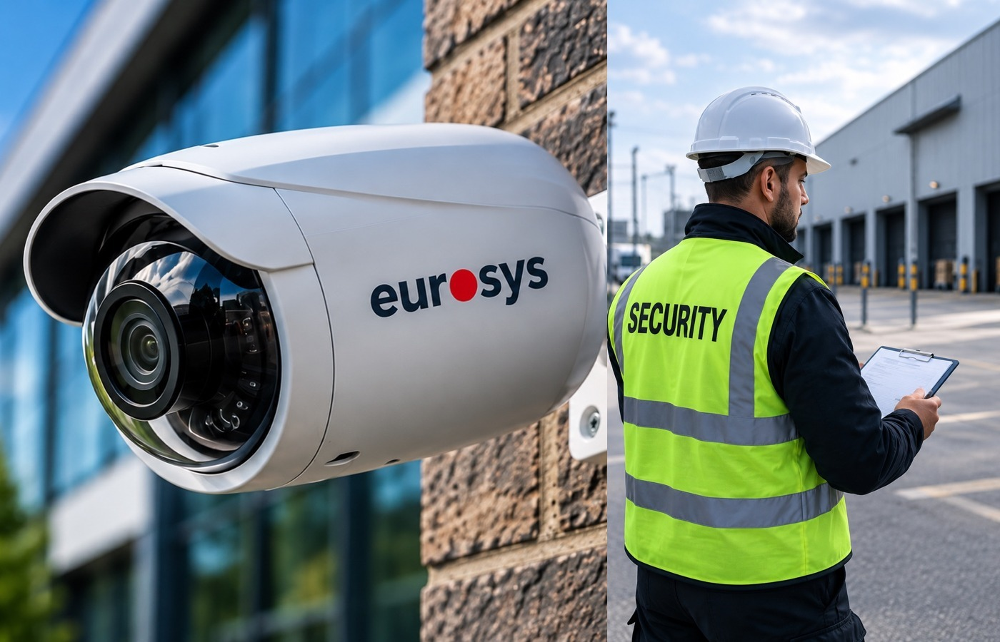

Understand
Clarify the requirement, risks, operating hours and stakeholder expectations.
We start by understanding the site, people, operating environment and security objective. We then build a proportionate service specification, deploy suitable personnel or technology, and review performance so the solution remains relevant.
Clarify the requirement, risks, operating hours and stakeholder expectations.
Develop the guarding, response or system solution around the actual environment.
Deploy trained personnel and competent engineers with clear instructions and accountability.
Monitor performance, respond to changes and identify opportunities for improvement.
Effective security starts with understanding how a site actually works. We consider access, people movement, operating hours, vulnerable areas, incident history and the client's priorities before deciding what combination of personnel, procedures and technology is appropriate.
Our approach brings together trained security staff, site instructions, supervision, reporting, CCTV, access control, alarm response and specialist support where required. Services are reviewed as risks and operations change, helping clients maintain a proportionate and practical security arrangement.

Committed to professional standards, responsible working practices and continual improvement.